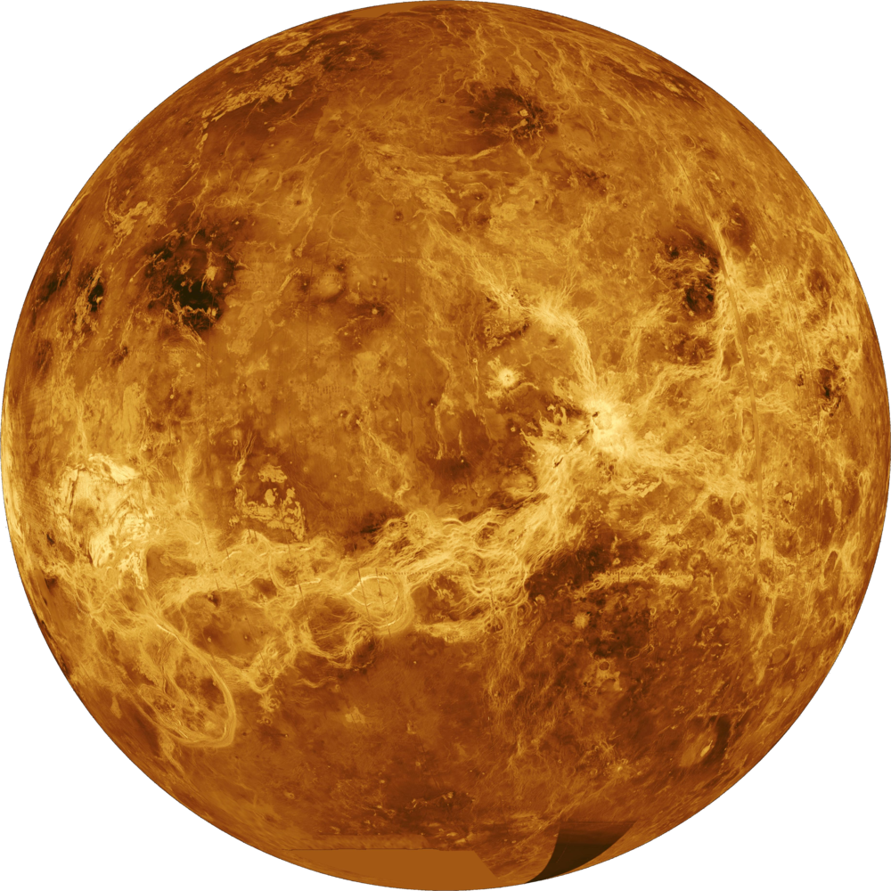
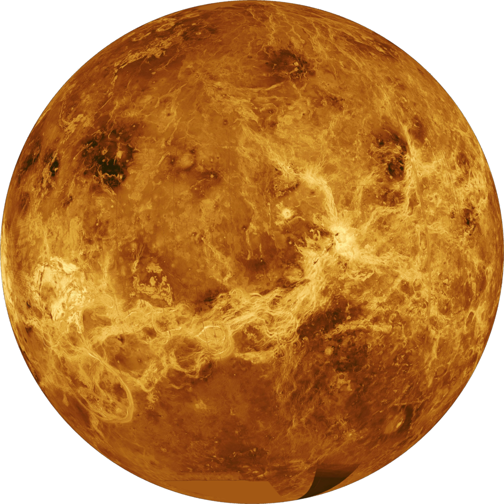

Click the planets to learn more
 



In our solar system, Earth, Mars, Mercury and Venus are terrestrial, or rocky, planets. For planets outside our solar system, those between half of Earth’s size to twice its radius are considered terrestrial and others may be even smaller. Exoplanets twice the size of Earth and larger may be rocky as well, but those are considered super-Earths.